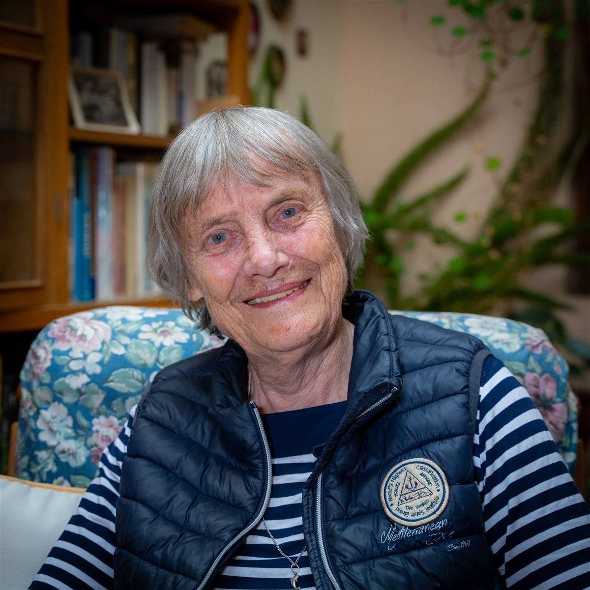

Desde sus inicios en 1976, la Asociación Santa Dorotea ha sido un faro de esperanza para las personas con discapacidad en Cajamarca. Fundada por Christa Stark, una apasionada defensora de los derechos de las personas con discapacidad, nuestra organización ha evolucionado para abordar las necesidades cambiantes de la comunidad.
La visión de Christa Stark ha sido el motor de nuestro crecimiento y éxito. Su dedicación y liderazgo han inspirado a otros a unirse a la causa, formando un equipo comprometido con la transformación de vidas. A lo largo de los años, hemos trabajado incansablemente para construir un entorno inclusivo donde cada individuo tenga la oportunidad de prosperar y alcanzar sus sueños.

Fundadora
Christa Stark nació el 12 de diciembre de 1943 en Pomerania. Creció en Nordfriesland como hija de un pastor, lo que la puso en contacto temprano con personas necesitadas y le enseñó a ayudar. Después de graduarse, estudió Educación Especial en Hamburgo y Dortmund. Tras trabajar algunos años en Bethel (Bielefeld), donde tuvo su primer empleo, visitó por primera vez Perú en 1975. En Lima, trabajó para el Servicio Alemán de Desarrollo (DED) en el Ministerio de Educación, apoyando el desarrollo de la Educación Especial en Perú. Durante este tiempo, también llegó a Cajamarca, donde conoció a su futuro esposo. Se quedó en el norte de los Andes peruanos y se convirtió en directora de la escuela especial local que ayudó a establecer. Dado que la atención a niños con discapacidades en las zonas rurales era aún peor que en las ciudades y el acceso solía ser difícil, en 1990, Christa Stark fundó un hogar para niños. Hasta el día de hoy, el hogar acoge a niños de diferentes provincias, así como a huérfanos. Un proyecto de esta magnitud nunca puede considerarse completo, por lo que Christa sigue siendo muy activa en el proyecto.